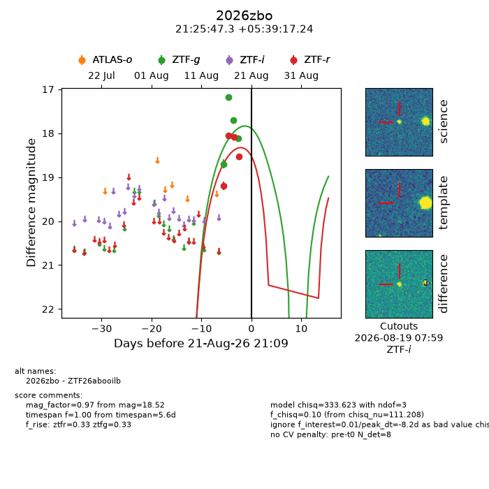
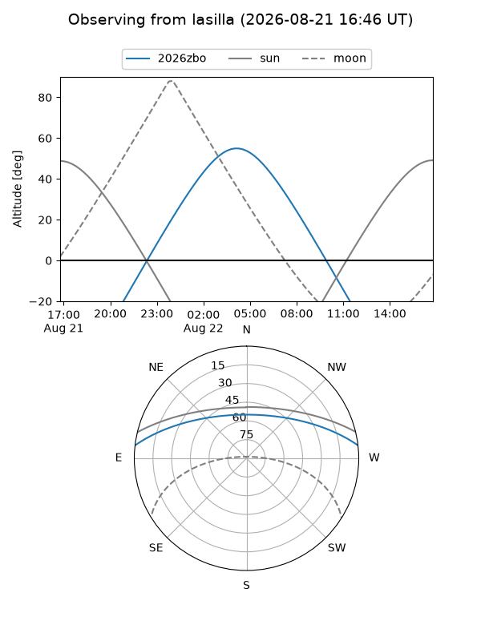
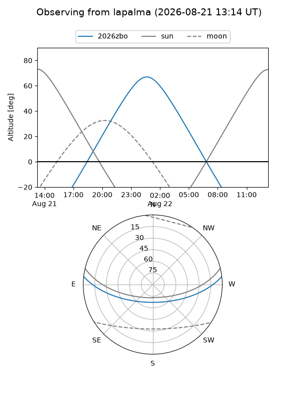
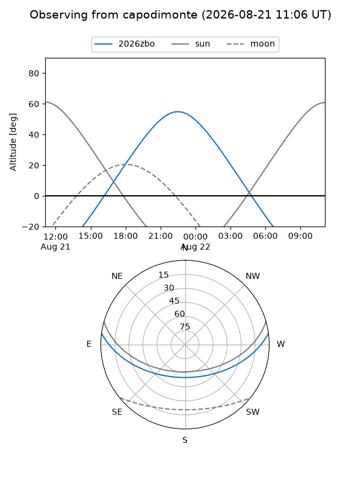
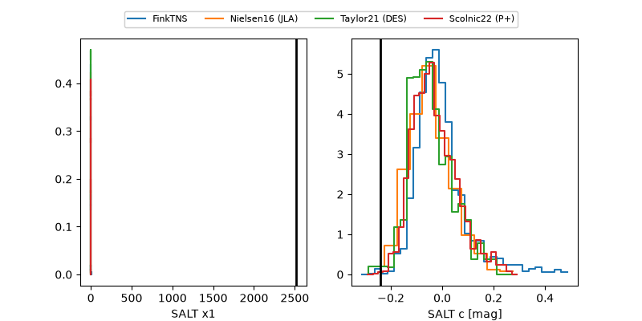

2026zbo
Target 2026zbo at 2026-08-21 21:12
Aliases and brokers:
FINK-ZTF: ztf.fink-portal.org/ZTF26abooilb
Lasair-ZTF: lasair-ztf.lsst.ac.uk/objects/ZTF26abooilb
ALeRCE-ZTF: alerce.online/object/ZTF26abooilb
YSE-PZ: ziggy.ucolick.org/yse/transient_detail/2026zbo
TNS name: wis-tns.org/object/2026zbo
Direct TNS query: direct search
alt names
ZTF26abooilb (ztf,fink_ztf)
2026zbo (tns,yse)
Coordinates:
equatorial (ra, dec) = 321.4471,+5.65479
equatorial (HMS+DMS) = 21:25:47.30,+05:39:17.24
galactic (l, b) = (58.4137,-30.49502)
Flags:
TNS type: nan
peak dt: -8.2
Photometry:
last ztfg=18.12, ztfr=18.52
4 ztfg, 4 ztfr detections
Lightcurve

Visibility



Additional plots
